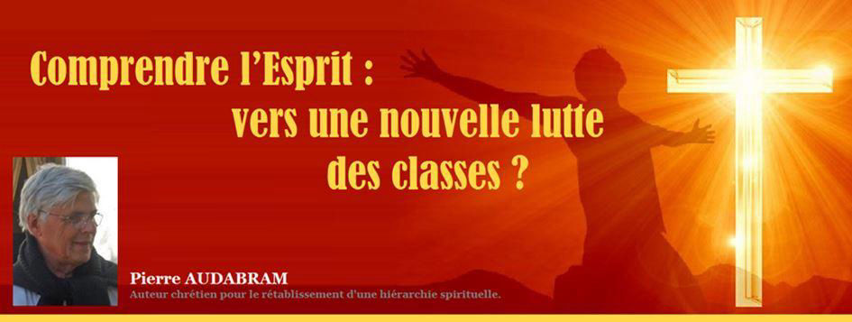
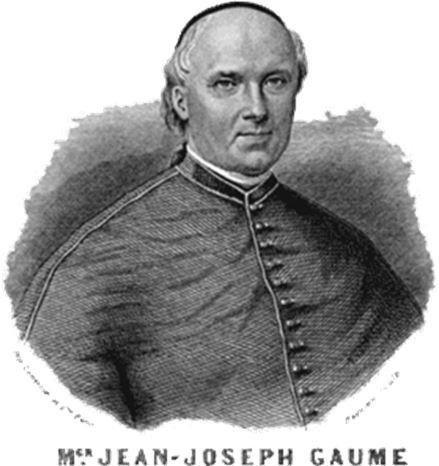
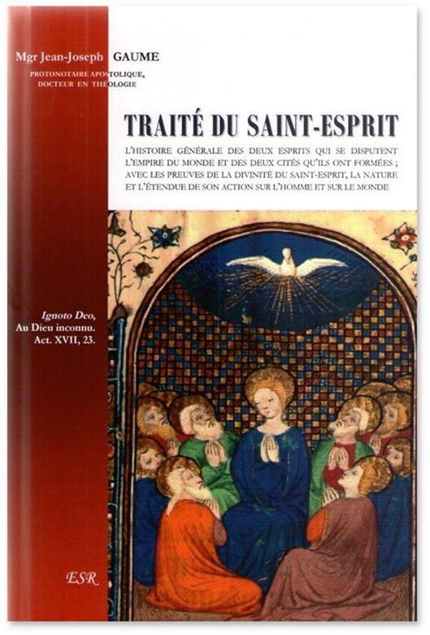

Comprendre l’Esprit : vers une nouvelle lutte des classes ?
par Pierre AUDABRAM

Depuis l’arrivée de la pandémie, plusieurs mois se sont écoulés au cours desquels nous avons successivement vu apparaître un nombre incalculable de menaces qu’il nous faut prendre au sérieux tant elles sont interdépendantes, même si elles agissent dans des domaines aussi différents que la sécurité sanitaire, l’économie, les finances, sans oublier la politique, la défense et la géopolitique. Pour reprendre le titre du célèbre ouvrage de Nassim Nicholas Taleb, nous sommes confrontés, nous, les pays occidentaux, non pas à un cygne noir 1, mais à une véritable escadrille de cygnes noirs constituée de plusieurs fronts que nous devons affronter quasi-simultanément. Jamais, au cours de l’histoire, n’avaient pu surgir si rapidement, tant de dangers affectant non seulement notre pays, mais l’ensemble des nations occidentales. Nous laisserons aux spécialistes, ou soi-disant tels, le soin de démêler l’écheveau des causes secondes, souvent trompeuses, car elles sont innombrables. Cependant, l’ampleur, la spécificité et la simultanéité des attaques bien réelles dont nos civilisations font l’objet, indique, sans nul doute, que nous vivons un de ces rares moments clés de la longue marche de l’humanité au cours desquels, sous peine de disparaître, nous devons, plus que jamais nous interroger : avons-nous bien pris toutes les précautions nécessaires pour éviter les désastres qui s’annoncent ? Manifestement non ! Avons-nous réalisé que les outils dont nous disposons pour régler nos problèmes, sont tous obsolètes ? Manifestement non ! Avons-nous enfin compris où se trouvent les causes réelles de tous nos échecs successifs ? Manifestement non ! C’est bien parce qu’on a répondu négativement à toutes ces questions, que nous croyons encore que nous sommes en mesure de lutter et d’espérer la victoire ; mais ce n’est plus le cas ; au contraire, nous sommes totalement désarmés et démunis de tout ce qu’il nous faudrait avoir pour espérer échapper au triste sort qui nous attend. À moins que…
Une urgence : mieux comprendre l’action du Saint-Esprit
Celui qui lira ces lignes, n’aura probablement pas conscience qu’il parcourt un texte décrivant, peut-être, et seulement dans les grandes lignes, les bases sur lesquelles devraient s’établir nos capacités de riposte ; Oh bien sûr, à ce stade, rien de miraculeux qui puisse stopper l’effondrement de notre civilisation occidentale, gangrénée depuis bien trop longtemps, mais parce qu’il y aura toujours un après, mais peut-être un début de panoplie intellectuelle et spirituelle nécessaire à un nouveau départ conforme aux critères métaphysiques qui ressortent de la Doctrine chrétienne et qui s’appliquent au genre humain.
Quand l’homme de la rue entend parler du Saint-Esprit, il rattache automatiquement celui-ci au domaine de la religion sans trop savoir à quoi s’en tenir des réalités que cela recouvre et c’est bien dommage. Sans doute est-ce dû au fait que la Sainte Bible cite à de très nombreuses reprises cette troisième Personne de la Trinité, mais sans en approfondir les mécanismes. On remarquera que les enseignements actuels de l’Église évitent d’aborder ce thème, du moins en profondeur, se limitant à ne citer que la présence et l’action du Saint-Esprit ; nos prêtres et théologiens auraient-ils perdu de vue les conditions et le périmètre de son action ? Grâce au sacrement du baptême, peut-être est-il devenu la chasse gardée de l’Église, reconnue comme telle par les foules de croyants, et même des incroyants, et qu’il ne vaut plus la peine de se compliquer la vie en abordant un sujet qui va de soi pour tout le monde, la sagesse voulant ne s’en tenir qu’au dogme ? S’il ne s’agit ni de paresse ni d’ignorance, peut-être aussi veut-on éviter d’exposer avec trop de détails des éléments qui pourraient éveiller quelques soupçons parmi les fidèles les plus instruits et réceptifs ? Quoi qu’il en soit, le moins que l’on puisse en dire, c’est que le thème de la troisième Personne de la Trinité n’a, pour des raisons qui restent à découvrir, jamais fait l’objet de l’attention qu’il mérite.
L’Esprit-Saint, peu expliqué depuis les premiers siècles
Sans aller jusqu’à scruter en profondeur la Somme Théologique de Saint Thomas d’Aquin, nous avons pourtant de nombreux ouvrages de référence sur le sujet, notamment celui de Mgr Jean Joseph Gaume (1802-1879), le Traité du Saint-Esprit, véritable mine de connaissances et de révélations dans ce domaine.
Alors que nous pensions que le relatif silence autour de l’Esprit-Saint se résumait à une tendance relativement récente de l’Église, Mgr Gaume, au contraire, nous apprend, à notre grande surprise, que cette répulsion à aborder ce sujet en profondeur ne date pas d’hier, puisque ce comportement a pu être noté depuis les premiers siècles du Christianisme, et cela change tout ! Alors que nous étions prêts à croire qu’il convenait de n’attribuer ce phénomène qu’à l’assoupissement intellectuel dû à une certaine routine administrative qui affecte Rome depuis Vatican II, nous constatons, avec le Traité du Saint-Esprit, que nous avons affaire à une tendance presque bimillénaire. Que faut-il donc penser de ce mystère qui s’est prolongé fort discrètement durant tant de siècles ?
Habitués que nous sommes de subir toutes les formes de rejet de la Gnose chrétienne de la part de l’Église et de ses fidèles qui, généralement, nous soupçonnent du pêché « gravissime », mais désormais à la mode, de Franc-Maçonnerie, nous avons eu l’intuition qu’il nous fallait suivre les développements de Mgr Gaume dans son Traité du Saint-Esprit. Et nous ne le regrettons pas. En effet, cette expérience, basée sur des arguments purement théologiques et philosophiques, a eu le mérite de commencer à lever un tout petit peu le voile sur la raison, ou tout au moins une des raisons, qui ont conduit à entourer la nature et l’action de la Troisième Personne de la Trinité d’une chappe de silence assez remarquable.
L’action de la 3ème Personne de la Trinité proche des enseignements gnostiques
Au cours de notre approche de ce texte de référence, en deux tomes de quelques 750 pages, nous avons été surpris de constater, dans le premier des deux, mise à part la terminologie spécifique de la théologie, que les sujets traités étaient les mêmes que ceux que la Gnose aborde fréquemment. Constatation plutôt troublante ! Nous pourrions, dans un premier temps, en déduire que, dès les premiers siècles, l’Église, soucieuse du maintien de son autorité morale et politique, avait pris conscience du danger que pouvait représenter la vraie Gnose, - ce que nous avions déjà remarqué -, et qu’il convenait de cacher le mieux possible ces vérités théologiques dérangeantes.
Remarquons en passant que cette attitude confirme le bien-fondé de la thèse de Jean Borella selon laquelle le Christianisme est, par lui-même, une doctrine ésotérique, thèse que nous avons déjà reproduite dans ce blog sous le titre Gnose chrétienne et gnose anti-chrétienne 2. Ainsi, pour au moins les raisons énumérées plus haut, l’Église catholique, a tenu à cacher un contenu qu’elle jugeait « sulfureux » parce que trop proche des arguments gnostiques. Un autre détail qui a son importance : nous avions déjà essayé de nous procurer ce traité il y a quelques années ; proposé par une maison d’édition anglaise, il ne se limitait, alors, qu’à la reproduction du second Tome dans lequel il n’est pratiquement question que des dons du Saint-Esprit dont la description n’éclaire pas notre sujet immédiat, mais sur lesquels il nous faudra revenir.
Une nouvelle approche pouvant avoir des conséquences de tous ordres
On n’aura peut-être pas encore réalisé les implications possibles d’une telle découverte si elle se trouvait confirmée, notamment au niveau religieux et métaphysique : elles pourraient être nombreuses et, quand on y réfléchit, avoir un retentissement sur de nombreux plans, tant spirituel, que social, que politique, qu’économique et géopolitique pour les années à venir. Nous ne manquerons pas de revenir longuement sur tous ces prolongements, armés des arguments nécessaires.
Pour aujourd’hui, afin de mettre l’eau à la bouche des lecteurs les plus attentifs, nous ajouterons que le discours religieux dominant, focalisé sur Dieu et son Fils, Jésus-Christ, semble avoir éclipsé le narratif exigu concernant le Saint-Esprit, qui se trouve, en quelque sorte, enfermé dans les limites des enseignements catholiques, et devenu, ainsi, le pré carré de Rome, le sacrement du baptême, présenté comme le seul moyen d’acquisition de l’Esprit, ayant peut-être réussi sa mission au-delà de toute espérance…
Une culture religieuse abusive nous aurait donc, semble-t-il, bien éloigné de la réalité. Quand Mgr Gaume, dans le second tome, expose les dons du Saint-Esprit, nous pensions qu’il s’agissait essentiellement de dons spécifiques, exclusivement conférés par la pratique des vertus et l’observance stricte des enseignements de l’Église. Mais si ce n’était pas rigoureusement le cas, tout porterait à croire qu’il s’agit là d’une vision bien limitée de l’action de l’Esprit Saint qui ne s’appliquerait donc pas au reste de l’humanité non baptisée. Cependant, cette dernière supposition se trouverait alors contredite par les textes de la Gnose ou de la pensée patristique elle-même.
Donc, en dépit du positionnement dogmatique catholique, on pourrait supposer qu’une partie de l’humanité, non inféodée à Rome mais faisant partie de l’aire culturelle de la Chrétienté, possèderait, naturellement ou surnaturellement, des dons équivalents à ceux distribués par la Grâce de la Troisième Personne de la Trinité. Les dons de crainte, de piété, de science, de force, de conseil, de sagesse, d’entendement, et d’intelligence, se retrouveraient, ainsi, en-dehors de l’Église et de son baptême, et, sous réserve d’approfondissement, ces dons n’auraient rien à envier aux premiers. Si nos soupçons s’avéraient fondés, ces privilèges ne concerneraient qu’une partie de l’humanité comprenant, entre autres, les fidèles chrétiens quelles que soient leur appartenance.
Pour ce qui concerne les autres, tous les autres, non encore touchés par la Grâce et dont le nombre dépasse de loin le groupe des hommes spirituels, on pourrait dire que cette humanité se trouve momentanément privée de l’action directe du Saint-Esprit qui veille tout de même sur elle avec bienveillance.
L’Esprit souffle où il veut, mais pas partout !
À ce stade de nos réflexions sur ce sujet qui pourrait s’avérer brûlant, que peut-on sinon en conclure, du moins subodorer ? Nous allons devoir examiner tous les éléments de ce mystère en le soumettant aux feux croisés des analyses gnostiques, théologiques, psychologiques avec CG Jung, qui semble bien placé pour consolider nos arguments, mais en faisant appel aussi à l’anthropologie sociale et à l’histoire. En effet, si nos soupçons se trouvaient confirmés, ce thème revêtirait alors une importance capitale en ce sens qu’il éclairerait l’organisation de la société d’un jour tout à fait nouveau qui pourrait révéler, puisque l’Esprit souffle où il veut, et que le spirituel se trouve hiérarchiquement au-dessus des plans psychique et matériel, que notre monde présente une grave inversion des valeurs, ce que nous avions bien sûr déjà remarqué. S’il s’avérait que le privilège de l’Esprit n’était plus limité au baptisé catholique seul, mais aussi à des peuples entiers dont les réalisations civilisationnelles et la créativité de tous ordres témoignent de sa présence active, nous serions alors tenus d’en connaître les raisons, exigence à première vue facilement satisfaite compte tenu des contenus spécifiques de la Gnose, de la théologie et de la psychologie junguienne. Nous serions alors obligés d’en conclure que nos élites globalistes monopolisent indument tous les pouvoirs qui régissent nos sociétés, et que le grave déficit spirituel de leur autorité rend leurs actions totalement illégitimes, l’acharnement à promouvoir à tous les niveaux une culture de mort contre les peuples en étant la meilleure des preuves.
Vers une nouvelle dialectique rétablissant la hiérarchie spirituelle
Mais le plus important est ailleurs : alors que nos nations, intellectuellement et spirituellement désarmées, s’écroulent face aux assauts répétés du marxisme culturel et du multiculturalisme woke, il semble de plus en plus que la dialectique de la lutte des classes qui oppose les pauvres aux riches a fait son temps et qu’elle doit laisser la place à une autre vision de la marche du monde. En effet, le riche touché par la Grâce de l’Esprit, ne peut être foncièrement mauvais quand son esprit d’entreprise participe activement au progrès social et humain ; tout comme le pauvre, oublié un temps par l’Esprit, ne peut automatiquement être reconnu innocent quand il agit comme la pire des ordures. Il semblerait, d’après les premiers éléments sur lesquels nous bâtissons ce début d’analyse, que les groupes humains qui, grâce à divers stratagèmes et au mensonge, ont acquis dans le monde, une position dominante malgré l’absence de toute interaction avec la troisième Personne de la Trinité, il semblerait, donc, qu’ils se sont construit un monde à leur image dans lequel ne domine que le matérialisme marchand qui n’a que faire de la vraie spiritualité. Privé de l’épine dorsale de l’Esprit, ce monde, dit moderne, fragilisé par son extrême complexité, n’a plus d’avenir - et c’est tant mieux -, ses contradictions internes l’ayant rendu agonisant et incapable de mener à son terme le combat exclusif entrepris depuis longtemps contre la Chrétienté et les peuples baignant dans son aire spirituelle, prouvant ainsi, sans vouloir la reconnaître, la supériorité civilisationnelle octroyée par l’action de l’Esprit Saint.
Partager cette page